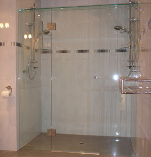
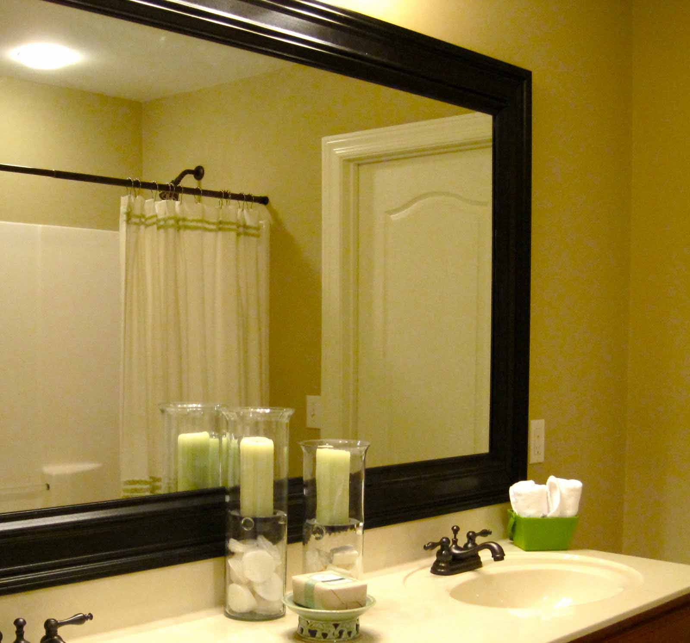
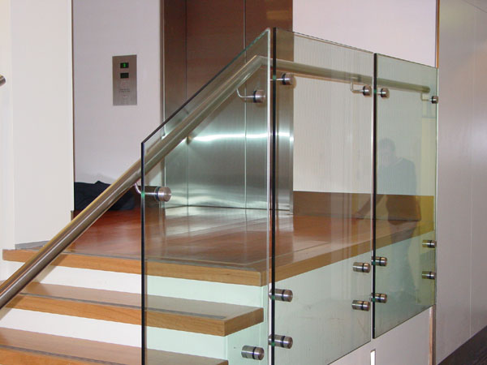

Kian berkembangnya dunia pembangunan, maka hadir banyak material penambah yang melengkapi estetika sebuah banguanan. Namun sekarang, penerapan kaca semakin meluas. Kaca juga berfungsi sebagai tempat keluar masuknya sinar matahari pada sebuah bangunan. Karenanya dari itu, benda ini cukup penting dipakai pada sebuah bangunana.
Tak kaca tempered, kaca shower, kanopi kaca Pekalongan, parket kayu jati dan masih banyak lagi. Tidak hanya material kaca kini juga terdapat material kayu atau parket lantai kayu jati.
Distributor, Supplier & Jasa Pasang Kanopi Kaca Pekalongan
Banyak ragam kaca kanopi yang diterapkan sebagai atap, tak hanya satu macam saja. Harga dari tiap-tiap kaca yang ditawarkan cukup bermacam tergantung kaca yang nanti akan diaplikasikan. Tidak cuma sekadar tembus pandang. Ada banyak opsi varian desain. Bila tembus pandang, kaca menyerap cahaya yang masuk sehingga kian tebal kaca karenanya kian sedikit cahaya yang bisa melaluinya, maka sifat transparannya makin berkurang.|Di samping pintu kaca shower akan membikin kamar mandi kecil tampak lebih besar.
Dis.or.id dapat membantu anda yang berkeinginan memasang atap kaca skylight pada gedung, dengan berbagai kelebihan yang dapat anda peroleh dengan memanfaatkan jasa yang di tawarkan dis.or.id. Selain disana anda dapat mendapatkan penawaran mengenai jasa pemasanga kanopi kaca Pekalongan. Kalau itu, kanopi juga bisa melindungi mobil dan kendaraan lain anda. Banyak bangunan seperti gedung perkantoran, perumahan, ruko dan apartement yang menggunakan kanopi kaca Pekalongan tempered. Sekiranya fungsi utama kanopi sebagai pelindung untuk bangunan tersebut, pemasangan kanopi kaca Pekalongan juga bisa membuat bangunan menjadi kelihatan lebih indah dan menarik, apalagi menerapkan konsep yang sama dengan konsep rumah minimalis. Disana anda akan memperoleh kanopi kaca Pekalongan yang sesuai dengan berjenis-jenis ketebalan dan harga yang cukup terjangkau.
Info Lengkap Pemesanan
Google Maps: https://www.google.com/maps/d/u/0/viewer?mid=12-N5cMmHbEOEG6n-94L4JatnBnNRTFkr&ll=-7.27380280025364%2C112.65243155000007&z=18
Note: https://www.facebook.com/notes/distributor-of-industrial-supply/kontraktor-jasa-pasang-kanopi-kaca/1785710151728864/
Event: https://www.facebook.com/events/227495344457982/
Portfolio Produk: https://www.facebook.com/1681607345472479/photos/?tab=album&album_id=1712629809036899
Distributor & Supplier Kaca Shower

Pintu Kaca Shower pada kamar mandi merupakan salah satu pilihan yang bagus untuk desain interior kamar mandi modern. Selain tersebut kini bisa anda lakukan dengna menggunakan kaca shower untuk kamar mandi anda. Kaca shower ini dapat menjadi dan memiliki poin estetika tersendiri sebab dengan memasangnya tentu kamar mandi anda akan kelihatan lebih indah dan mewah layknya kamar mani hotel. Shower screen yakni kotak atau alat yang berfungsi sebagai penyekat ruang khusus untuk kamar mandi. Ada sebagian alasan mengapa Pintu Kaca Shower banyak digunakan salah satunya yaitu kaca lebih tampak bersih dan rapi dan juga lebih mudah dalam perawatannya. Kelebihan shower screen dibanding dengan metode penyekatan yang lain adalah diwujudkan dalam bentuk yang telah jadi dan tinggal dipasang saja. Apalagi sekarang telah ada kios penjual shower screen yang memasarkan produknya dalam metode satu paket termasuk pemasangannnya. Kita tak perlu repot lagi mencari tukang sendiri karena pemasangan alat sekat ini memang membutuhkan teknik tersendiri.
Tidak anda sedang mencari kaca shower untuk kamar mandi, anda dapat langsung mengunjungi dis.or.id. Disana tersedi kaca shower dengan bermacam ukuran dan juga harga yang juga cukup terjangkau. Anda dapat buktikan sendiri.
Distributor, Supplier & Jasa Pasang Kanopi Kaca
Seiring dengan perkembangan zaman di dunia properti, kini kanopi kaca Pekalongan telah berkembang cepat mengikuti arsitektur modern. Atap kaca skylight banyak digunakan pada rumah, gedung, kantor, café yang mengusung gaya modern untuk membuat efek sinar yang dramatis pada ruangan bagian bawahnya serta memberi kesan modern pada bangunan. Harga dari tiap kaca yang ditawarkan cukup berbagai tergantung kaca yang nanti akan dipakai. Tidak hanya sekadar tembus pandang. Jikalau tembus pandang, kaca mengabsorpsi cahaya yang masuk sehingga kian tebal kaca maka kian sedikit sinar yang dapat melaluinya, karenanya sifat transparannya makin berkurang.|Di samping pintu kaca shower akan membikin kamar mandi kecil terlihat lebih besar. Atap akrilik atau bisa juga disebut atap kaca acrylic ini banyak ditemukan di sebuah bangunan rumah, seperti ruko, apartemen, kafe, mall, sampai bangunan gedung.
Sekarang anda bisa menerima kanopi kaca Pekalongan dengan mutu terbaik dan juga berkwalitas di dis.or.id. Harga untuk setiap pemasangan bahkan bermacam-macam pantas dengan kebutuhan anda. Kalau itu, kanopi juga dapat melindungi mobil dan kendaraan lain anda. Sesudah kaca untuk atap kanopi cukup digemari. Tak anda sedang mencari kanopi kaca Pekalongan, anda bisa lantas mengunjungi dis.or.id. Disana anda akan memperoleh kanopi kaca Pekalongan yang pantas dengan beraneka ketebalan dan harga yang cukup relatif murah.
Jasa Maintenance Kaca
Maintenance pada kaca sangat dibutuhkan agar gedung pencakar langit milik Anda terlihat baik dan bersih. Sudah beberapa tahun, kaca gedung menjadi kusam sebab terik sinar matahari, debu, hujan, atau kotoran lainnya. Jasa maintenance kaca juga menawarkan pelayanan koreksi. Tak ada kaca yang rusak atau pecah, cakap untuk melaksanakan pembenaran kapabel membersihkan bermacam variasi kaca dengan ukuran, betuk, serta warna yang pantas dengan yang Anda butuhkan. Umumnya ditahui banyak pemilik gedung kaca yang ingin merawat bangunan.
Dis.or.id menyiapkan seluruh tipe kaca sesuai keperluan ketika ini.
Tidak anda sedang membutuhkan jasa maintenance kaca, anda dapat seketika mengunjungi dis.or.id. Dis.or.id juga sudah mempersiapkan dengan pelbagai alat yang bisa diaplikasikan untuk menjangkau semua sudut gedung, sekalipun gedung Anda sungguh-sungguh tinggi. Oleh sebab itu, dis.or.id cuma memilih orang-orang yang sungguh-sungguh profesional dan sudah memiliki pengalaman dalam hal maintenance kaca. Dengan telah memberikan training terhadap energi pakar sehingga mereka telah bisa menjalankan pekerjaan mereka dengan sungguh-sungguh baik. Selain hanya dalam hal membersihkan kaca, mereka juga sanggup menjalankan pembetulan serta penggantian kaca yang mengalami kerusakan.
Jasa Pemasangan Kaca Tempered
Kini jasa pemasangan kaca tempered menjadi alternatif yang ideal saat Anda berkeinginan memiliki sebuah hunian atau gedung perkantoran yang komponen tertentu terbuat dari kaca tempered. Diperlukan kaca ini diwujudkan dari kaca float bermutu tinggi melalui cara kerja pemanasan thermal di mana kaca dipanaskan hingga pada spot lunak kemudian didinginkan dengan cepat. Kaca ragam Tempered mempunyai kekuatan 4-5 kali lebih baik dibandingkan kaca lazim dengan ketebalan yang sama. Selain sembarang tukang juga dapat mengerjakan pelaksanaan pemotongan ini.
Banyak hal yang dapat dilakukakn kaca tempered ini salah satunya sebagai pembatas, untuk kamar mandi dan masih banyak lagi. Tak anda beratensi untuk memasang kaca temeperd, anda cuma tinggal mengunjungi website dis.or.id. Bukan sembarang alat yang dipakai untuk memotong kaca tempered pantas dengan kebutuhan. Tidak saat ini anda sedang ingin membangun suatu bangunan atau gedung, anda bisa memanfaatkan kaca tempered untuk diterapkan langsung ke semua tipe bidang.
Distributor & Supplier Pintu Kaca
Kini telah hadir ratusan pintu kaca dengan desain yang berbeda-beda yang dapat di buat dan di pesan, entah itu pintu kaca frameless (tanpa bingkai) atau pintu kaca dengan pigura. Tak cuma di gedung atau perkantoran, tetapi pntu kaca juga bisa anda aplikasikan pada rumah agar cahaya bisa segera masuk pada ruangan dan memberikan suasana hangat. Ada juga pintu kaca dengan pigura dengan desain yang berbeda seperti folding dan sliding. Mengenai modelnya, Anda bisa putuskan apakah ingin memiliki pintu kaca desain lipat, geser, atau teladan yang lain. Desain hal yang demikian dapat disesuaikan dengan konsep properti Anda. beberapa ragam kaca yang paling kerap kali dipakai untuk membuat pintu kaca, mulai dari ragam kaca tempered sampai kaca non-tempered. Dalam hal ini, terdapat sebagian tipe kaca dengan mutu yang terbaik. Kini paling banyak diminati saat ini ialah kaca tempered karena jauh lebih kuat dan tahan lama.
Dis.or.id menyediakan pintu kaca dengan berbagai variasi yang dapat anda pilih cocok keperluan. Dengan energi spesialis yang telah amat handal dalam membikin bermacam-macam contoh pintu kaca.
Anda dapat memilih kaca tempered yang sekarang ini sedang naik daun. Untuk budget yang lebih sedikit, Anda bisa memilih macam kaca non-tempered.
Jual Kaca Cermin

Kaca cermin maupun kaca reflektif adalah jenis kaca yang bisa memantulkan cahaya dan mereduksi sifat tembus pandang dari sisi luar, sehingga kerap pula disebut dengan kaca one way. Lihat saja banyak produk cermin yang dijadikan dengan desain unik dan menarik. Banyak desain menarik dari cermin yang dapat Anda pilih di sini. Anda dapat tentukan desain seperti apa yang Anda inginkan. Jadi, cuma nampak transparan dari satu sisi saja. Pun juga komponen tepi. Sementara itu, ketika dipandang dari luar, kaca ini reflektif.
Dis.or.id adalah penyedia berbagai ukuran kaca cermin yang dapat anda aplikasikan ke gedung, kantor maupun rumah anda. Pun, Anda bisa pakai kaca cermin ini sekaligus sebagai material utama, seperti sebagai pintu lemari di kamar tidur Anda. Atau Anda dapat memilih cermin yang dibangkai dengan beragam macam bahan seperti kayu, aluminum, plastik, dan bahan lainnya. Atau barangkali Anda mengharapkan kaca cermin yang segera dapat ditempel pada komponen furniture tertentu seperti pintu lemari. Anda dapat menambahkan pigura atau tanpa frame pantas dengan kesukaan Anda. Cermin ini umumnya ditempatkan di kamar mandi, di atas wastafel, atau di kamar tidur. Dis.or.id menyediakan kaca cermin yang bisa anda beli dengan harga yang amat murah dan dengan kwalitas terbaik. Melainkan kunjungi dis.or.id untuk menerima penawaran menarik.
Jasa Pemasangan Railing Kaca

Mungkin hal ini disebabkan kian banyak pemilik rumah yang berkeinginan menunjukkan sebuah desain interior rumah yang benar-benar minimalis. Malahan juga bagian pegangan atau framenya. Pastikan komponen tersebut terbuat dari bahan aluminum yang kuat. Melainkan, Anda mesti pastikan railing kaca bermutu terbaik. Kaca variasi yang satu ini sudah terkenal dengan ketahanannya. Jika itu, dari segi keamanan, kaca tempered ini juga pas sekiranya menjadi alternatif Anda. Malah juga bahan yang diaplikasikan.
Dalam hal ini, ada banyak variasi kaca yang dapat dipakai untuk membuat railing ini. Anda dapat memilih kaca tempered sebagai bahan utamanya. Ada kaca tempered yang sekarang diminati banyak orang. Seandainya itu, kaca ini bisa pecah melainkan tak memunculkan pecahan yang runcing namun pecahan kecil-kecil dan lembut. Dengan demikian, pecahan kaca tempered tidak akan melukai orang yang terkena pecahan. Apabila kaca, amati juga aluminum yang menjadi bingkainya. Kini pasti, railing kaca ini menjadi alternatif yang pas. Bila memberikan kesan minimalis pada interior rumah, ini juga membuat rumah Anda kelihatan lebih nyaman untuk diwujudkan daerah tinggal.
Dengan harga yang betul-betul relatif murah, anda dapat seketika mendapatkan railing kaca yanag anda inginkan. Tentu dengan harga yang murah melainkan tetap berkelas.
Distributor & Supplier Pintu Lipat Kaca
Sebab keunggulan yang dimiliki hal yang demikian, Anda pasti berpikir harga pintu kaca lipat frameless ini mahal. Pada kenyataannya, harga kaca tempered ini tidak terlalu mahal. Mak dari itu, kaca ini ditawarkan dengan harga yang cukup dan relatif murah. Apalagi jikalau taman Anda terbuka sehingga pencahayaan alami masuk. Maka, sinar itupun akan masuk ke dalam ruang makan sebab penyekatnya terbuat dari pintu kaca transparan.
Harga pintu kaca lipat frameless ini benar-benar dipengaruhi oleh ukuran lebar dan tingginya pintu. Tetapi bukan itu saja, aksesoris komplemen juga berakibat. Anda seharusnya memastikan aksesoris yang melengkapi pintu kaca lipat memiliki mutu terbaik, seperti teladan hinges.
Jasa Pemasangan Kubikel Toilet

Kubikel kaca banyak dijumpai di beraneka daerah besar seperti perkantoran, gedung, bahnkan sekarang juga dapat di pakai untuk hunian rumah.
Anda juga bisa membuat kamar mandi di space yang lebih kecil dan tidak memerlukan lahan yang begitu besar untuk membuat kamar kecil yang banyak. Kaca sebagai penyekat dalam kamar mandi awam disebut kaca shower. Kaca shower banyak digunakna sebab memberikan kesan mewah.
Tersedia bermacam ukuran serta ketebalan dari kubikel yang bisa anda pilih cocok dengan yang anda inginkan.
Tapi pemakaian kaca di kamar mandi dapat jadi problem saat Anda meletakkannya dengan salah. Justru embun dapat merekat di kaca dan lambat laun dapat membikin kaca tak sejernih semula. Jika anda ketika ini sedang membutuhkan kaca shower untuk kamar mandi, lantas saja kunjungi dis.or.id untuk melakukakn pemesanan maupun menanyakan mendetail harga dari kaca shower.
Distributor & Supplier Partisi Kaca
Partisi kaca cuma ditemui di perkantoran modern atau sentra perbelanjaan. Telah banyak properti yang bahan berupa kaca sebagai partisi. Anda bisa lihat di perbelanjaan modern, hotel, dan juga perkantoran. Banyak ruangan yang disekat dengan menggunakan partisi kaca. Anda dapat menghitung sendiri berapa uang yang patut Anda siapkan untuk membeli bahan untuk partisi tembok. Tidak rumah, kini perkantoran juga dibuat sedemikian rupa tampak betul-betul minimalis dan menarik. Dengan harga yang amat bersahabat pantas dengan kantong anda, Segera daripartisi kaca ini tidak perlu diragukan lagi. Sebagian kunjungi dis.or.id sekarang juga. Anda mengaplikasikan partisi kaca ini sebagai penyekat sebagian ruangan seperti kamar mandi dalam, taman dalam ruangan, ruangan bermain di dalam rumah, dan lain sebagainya. Kecuali itu, tentukan juga jenis kaca yang mau diaplikasikan apakah transparan, semi transparan, atau kaca cermin yang ruangan benar-benar privat. Dis.or.id memasarkan jenis kaca penyekat yang kualitasnya terbaik. Kalau anda kesusahan untuk memasang dinding kaca penyekat, dis.or.id menyediakan jasa pemasangan dinding kaca penyekat untuk kamar mandi rumah anda.